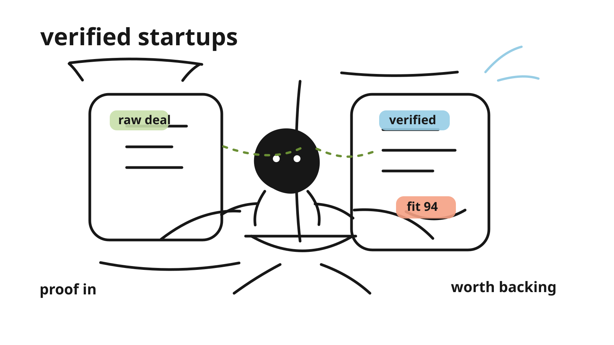
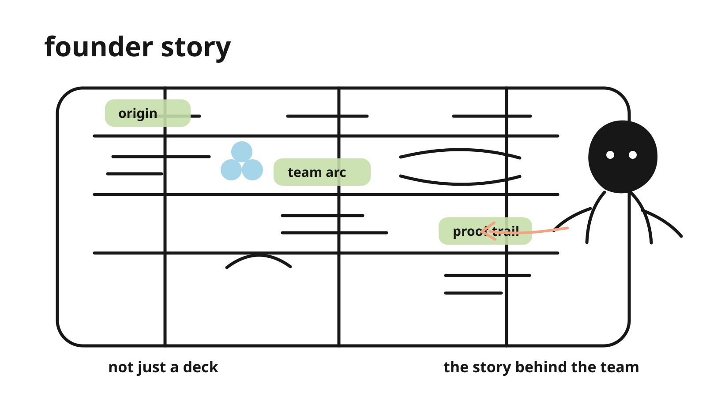
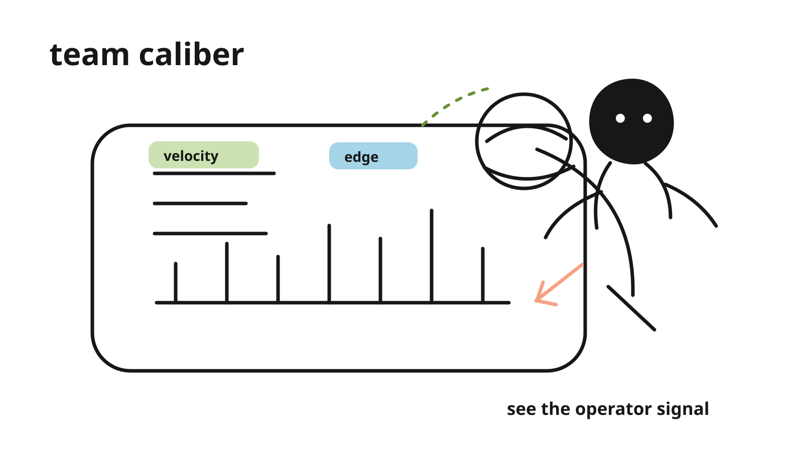
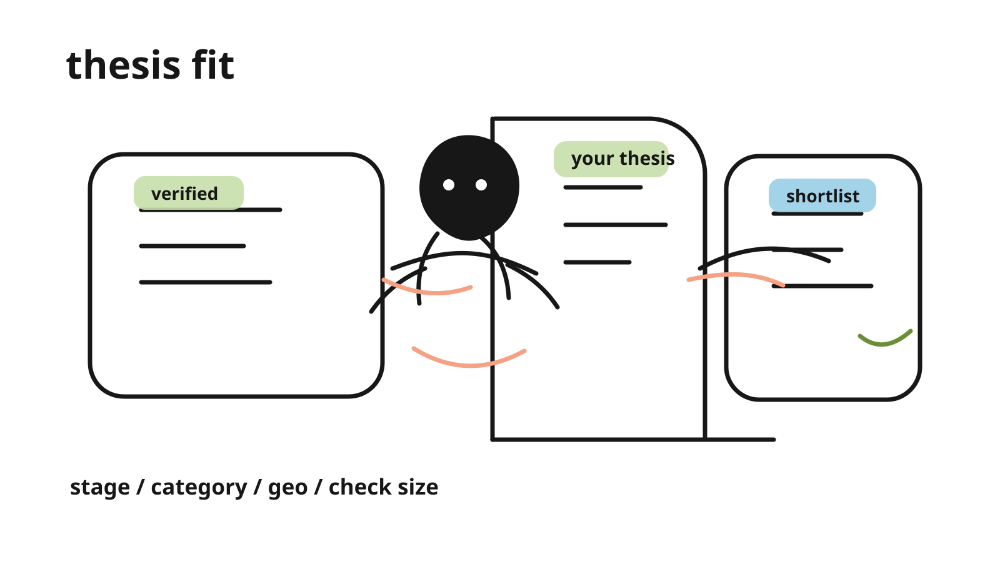
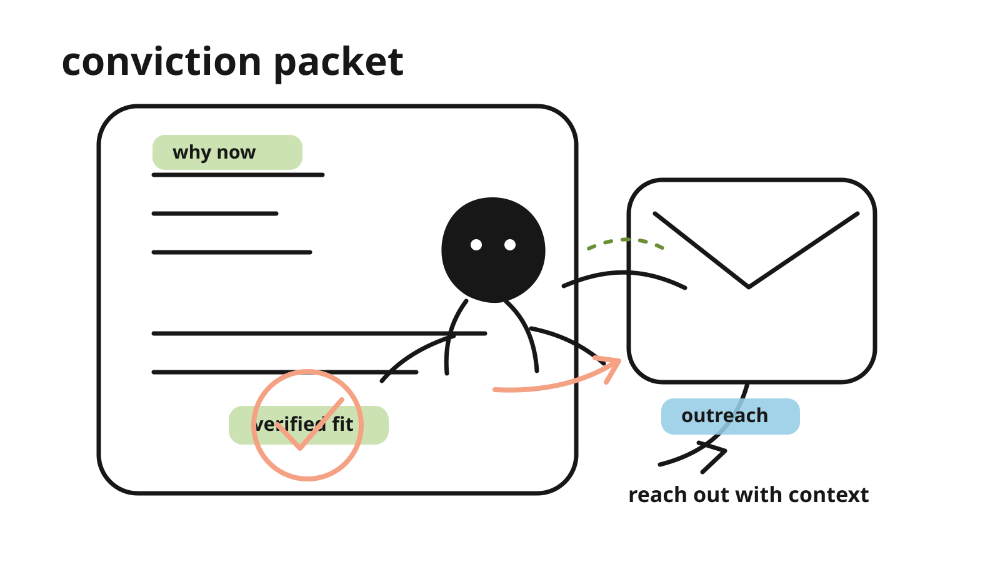

investor promo
Verified startups worth backing.
Not another noisy list. A clearer way to see founder proof.
proof check running
apparent verify --worth-backing

Venture teams do not need another noisy list.verified
founder context
Founder + team story
See who built it, why now, and what changed.


Apparent shows the founder story, team caliber, and proof behind the company.context
caliber check
Verified signals
Proof, story, and team caliber become investor-ready signals.
Founder storyOrigin, market insight, why this team.
Team caliberVelocity, credibility, founder-market fit.
Proof trailShipping, customers, revenue, trust.
Founder story and team caliber become readable before the first call.signals
thesis fit
Investor thesis
Know why this team fits your thesis now.

1
Stage and category fitMatched to the investor's actual criteria.
96
2
Proof-backed timingWhy this company matters right now.
92
Then Apparent matches the startup to your thesis, so you know why it fits now.fit
conviction
Conviction packet
Check the signals and reach out with conviction.

OK
Verified startupFounder context, caliber, proof, and thesis fit.
send
Open the packet, check the signals, and reach out with conviction.outreach
outro
Verified startups. Founder context. Thesis-fit deal flow.
For investors who want to find founders worth backing before the round gets loud.
Verified startupsThesis fit
Apparent: verified startups, founder context, and thesis fit deal flow for investors.Apparent